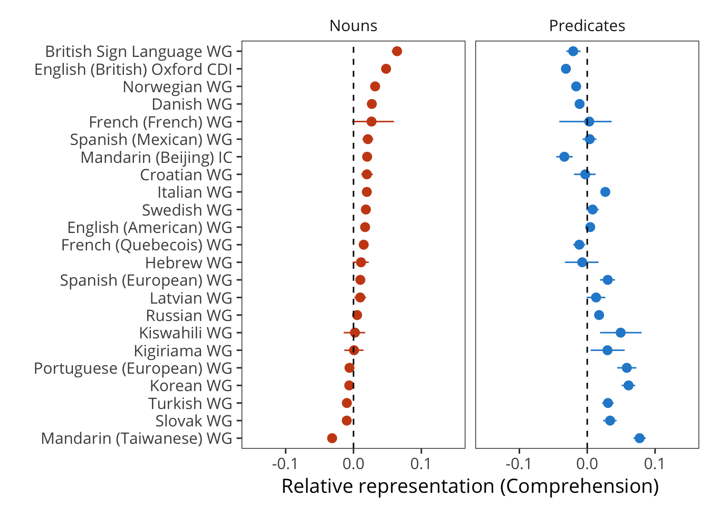
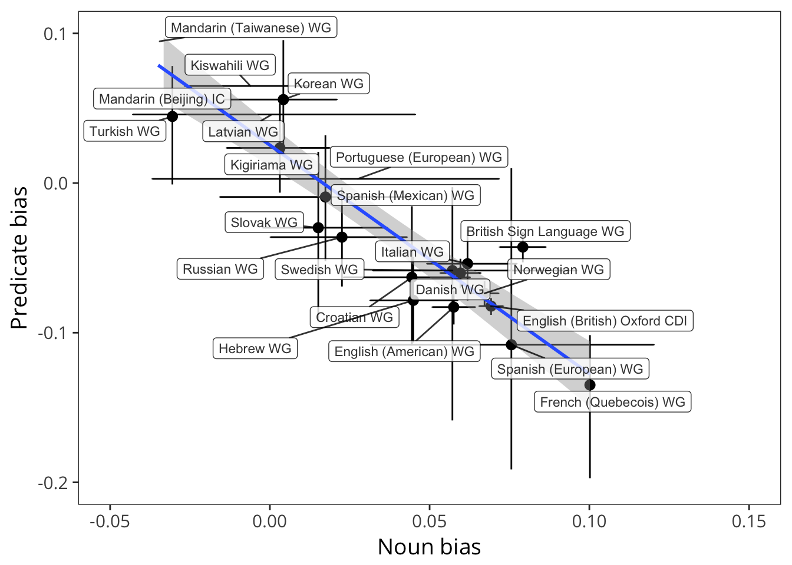

5 Categorical Composition: Syntax3
This chapter focuses on splitting vocabulary data into syntactic categories and analyzing consistency and variability across languages in the acquisition of these. We quantify the “noun bias” across languages. In addition, we report the degree of bias for or against verbs and closed-class words. In Chapter 12, we consider variation of this sort within individuals.
5.1 Introduction
Over the first few years, young children are exposed to a “sea of words” across many different contexts and from many different people (p. 516, Goodman, Dale, and Li 2008). And despite the fact that children vary tremendously in the rate at which they learn, the first words that children utter are strikingly consistent (Tardif et al. 2008,Schneider, Yurovsky, and Frank (2015)): They tend to talk about important people in their life (mom, dad), social routines (hi, uh oh), animals (dog, duck), and foods (milk, banana) (Goodman, Dale, and Li 2008, Bates et al. (1995); Nelson 1973; Clark 1979). Soon thereafter, they begin to add verbs (go) and adjectives (pretty) in greater proportions than earlier in development and may even begin to use closed-class forms, such as determiners (the). These patterns seem to suggest a developmental course that follows distinct “waves” of learning for words from different classes. That is, along with early social routines, nouns tend to predominate early vocabularies, while other types of words, such as predicates and closed class forms, are learned later.
The composition of early vocabulary is complicated by the fact that we categorize words by their adult syntactic category. We do so in the discussion below without presupposing that children themselves do this categorization, however (M. Tomasello 2000). Children may be sensitive to these categories very early in development (Valian 1986,Yang (2013)) or they may discover them either gradually (Pine and Lieven 1997) or more quickly (Meylan et al. 2017). Importantly, though, we treat adult syntactic categories as an analytic convenience that describes certain regularities in how groups of words are distributed in language samples and how they function in different contexts, rather than as an ontological fact about children’s knowledge. Chapter 9 breaks down these categories further, asking what sorts of information predicts the order of acquisition for individual words, both within and across categories.

Figure 5.1: Figure from Bates et al. (1994), showing developmental trends in the categorical composition of early vocabulary
Bates et al. (1994) characterized these patterns of vocabulary composition in the following way. The figure above (reprinted from that paper) shows average vocabulary composition of nominals, predicates and closed class forms as a function of children’s vocabulary size for English-speaking children from the original norming study of CDI: Words & Sentences form (Fenson et al. 1994). Note that when children only know a few words (e.g., fewer than 50 words), the nominals comprise the greatest proportion of the words that children are reported to produce, with very few predicates or closed class forms (< 10%). As the children learn the next hundred words or so, the proportion of nominals increases even more dramatically with a gradual increase in the proportion of children’s vocabularies that are predicates. Closed class forms remain a much smaller proportion over the period. Yet after about 300 words or so, children tend not add nouns to their vocabularies at the same pace that they did earlier in development, reflected in the proportion of nominals tending to decrease.4 It is during this developmental period that proportion of predicates tend to increase, followed by a growing proportion of closed class forms.
Why do children learn nouns before verbs and other types of words? This question has received a great deal of attention in the literature, and we can briefly summarize some of the major issues here. One reason for this “noun bias” could be that nouns are simply more frequent in the talk to young children. It is well-established that children learn the words that they hear more often (e.g., Hart and Risley 1995). Many observational studies of English-speaking caregivers have demonstrated that caregivers use more nouns than verbs (types or tokens) with their children (e.g., Fernald and Morikawa 1993; Goldfield 1993; Gopnik, Choi, and Baumberger 1996; Kim, McGregor, and Thompson 2000; Poulin-Dubois, Graham, and Sippola 1995; Tardif, Shatz, and Naigles 1997).
Other researchers have framed the “noun bias” in terms of universals about what and how different words “partition” things in the world.For example, Gentner (1978) has argued that children learn nouns before verbs because the meanings of nouns are easier to encode since they identify things that can be differentiated in the world (e.g., common everyday objects). Verbs and other predicates, in contrast, express relations among things in the world. Hence, the meanings of verbs are less accessible to children through common, everyday experiences and hence, are more difficult to map onto word forms without additional linguistic or social support.
Other reasons that nouns might be easier than verbs for young children is that nouns tend to be less morphologically complex than verbs (e.g., Tardif, Shatz, and Naigles 1997). For example, in many languages, nouns are typically marked only for number, whereas, verbs carry both person and tense information. In English, at least, verbs might also be harder to learn because they tend to occur in sentence-medial position (rather than sentence final), which make verbs less salient in the input that children hear (Slobin and others 1985; Caselli et al. 1995).
Finally, differences in children’s preferences for nouns vs. verbs might result from differences in what contexts children hear nouns vs. verbs in the speech from caregivers (e.g., Choi and Gopnik 1995; Tardif, Gelman, and Xu 1999). Several researchers have examined what caregivers talk about using naturalistic data of caregiver-child interactions. For example, caregivers in some cultures tend to emphasize the names for objects, spending a great deal of time labeling objects for their children. In other cultures, caregivers do so much less frequently, instead focusing on the actions in which those objects engage (e.g., Fernald and Morikawa 1993; Gopnik, Choi, and Baumberger 1996). These differences in input to children can influence the words that are salient for children, and hence, the words that they are most likely to learn.
What is the evidence that a noun bias is a universal feature of children’s vocabularies? Documenting the extent to which the noun bias is universal is relevant to understanding mechanisms of language learning, in particular, the presence of conceptual biases in early acquisition and the role of cross-cultural variability in the input that children receive from caregivers. The evidence varies across languages, as well as across methodologies (for example, naturalistic observation vs. parent report). Some studies find consistent evidence for a noun bias in English, as well as in Korean and Italian (Bates et al. 1994; Au, Dapretto, and Song 1994; Caselli et al. 1995; Kim, McGregor, and Thompson 2000). Other studies do not find evidence of a noun bias in languages as varied as French, German, Chinese, Estonian, and Korean (Bassano 2000; Bloom, Tinker, and Margulis 1993; Choi and Gopnik 1995; Kauschke and Hofmeister 2002; Tardif 1996; Tardif, Gelman, and Xu 1999; Schults and Tulviste 2016).
In sum, identifying the extent of cross-linguistic variation vs. universals has been difficult since variation across studies may be due to the different methodologies that are used. For example, even within a single language, for example, Korean, parent reports of children’s first words find a noun bias (e.g., Au, Dapretto, and Song 1994), whereas, studies using direct observational methods find less evidence for this pattern (e.g., Gopnik, Choi, and Baumberger 1996). Further, few studies have had the scope to directly compare the extent of the noun bias across multiple languages using a common methodology.
One notable exception in a literature where samples have been small – in terms of both languages and children – is Bornstein et al. (2004), in which the researchers compared vocabulary composition in seven different languages. In this chapter, we follow this comparative approach (see also Tardif et al. 2008). Since we have access to many more observations, our approach offers a more comprehensive approach than these earlier studies. Moreover, we attempt to quantify the estimates of the extent to which languages show a noun bias: we develop a statistical method for quantifying the extent of the noun bias across the entire developmental range in which a particular form is used.
5.2 Methods and Data
Each CDI form contains a mixture of words in different classes. We adopt the categorization of Bates et al. (1994), categorizing words into nouns, predicates (both verbs and adjectives), function words (also referred to as “closed class” words), and other words. For each child’s vocabulary, we compute the proportion of the total words in each of these categories that they are reported to produce. Following the approach developed by Bates et al. (1994), for each of the languages in our sample, we plot these proportions against total vocabulary. Each dot represents a child’s knowledge of a particular class, while curves show the relationship between a class and the whole vocabulary. If categories grow independently of one another, these curves should approximate the diagonal.
We limit our analysis to traditional WS and WG forms (along with variants in these classes) because short forms like the British English TEDS don’t typically include category information. The sample sizes included in this analysis are given above.

Figure 5.2: Schematic of our vocabulary composition analysis.
Building on the method of Bates et al. (1994), our analyses relies on plotting the proportion of words known in a particular category (e.g., nouns) in a child’s vocabulary by the proportion of all words in the child’s vocabulary. This approach is shown schematically above. If every time a child learns a word, that word is sampled randomly from the different words available on the form, then the proportion of nouns in vocabulary should track perfectly with the proportion of total vocabulary (the diagonal). In contrast, if nouns are over-represented, the child will be represented by a point above the diagonal; if nouns are under-represented, they will be under the diagonal.

The figure above shows this analysis, carried out with English (American) WS data. Each point shows an individual child’s vocabulary, and each panel shows a different lexical class (thus each child is represented once in each panel). We capture the overall trend in this plot by estimating a linear model over the data, predicting category proportion as a function of total production. This model is fit with third-order polynomials (so as to allow both concave/convex functions and also changes in convexity). We fit these models with the constraint that they must predict the point [1,1] so that they are guaranteed to arrive at the diagonal point in the special case that all words on a form are checked. These model fits are shown by the lines.
The final step in our method is to capture the overall bias in a particular sample by estimating the difference in area between the curve and the diagonal. If the curve is substantially above the diagonal, this difference will be positive (indicating e.g., a positive noun bias). In contrast, if the curve is below the diagonal, the difference will be negative. To capture uncertainty in this area estimate, we conduct a resampling analysis where we randomly resample the population 1000 times with replacement, then recompute the area measurement. Confidence intervals below are based on this resampling procedure.
Critically, this analysis controls for a number of confounds in previous analyses. First, because our interest is in the shape of the overall curve, under-representation of children in some age-band should add uncertainty but not bias. Of course, if data are too sparse, estimates will be unconstrained, but particulars of age sampling should not bias our estimates. Second, in principle, the analysis should not be biased by the number of items in a particular category, as the analysis is relative to the numerical representation of a particular class on the form. Thus, in principle we should be able to compare across forms with larger or smaller numbers of items in particular sections.
5.3 Results
We present results of this analysis across languages, beginning with comprehension on WG-type forms and moving to production in WS-type forms. We do not analyze WG production data here. For the most part, production estimates on WG forms are quite low, and hence curves are relatively unconstrained (or determined by a small number of children who are reported to have very large early vocabulary).
5.3.1 Comprehension: Words and Gestures

Comprehension results are shown above. Overall, the largest trend that is visible in these plots is the under-representation of function words, with nouns and predicates appearing quite close to one another. For further comparison, we show summaries of curve areas for each language below.

Nouns are over-represented in many – but not all – languages. Portuguese, Turkish, Korean, and Slovak, a set of typologically- and culturally-distinct languages, show slight under representation, with BSL and British English showing the largest over-representation of nouns. Predicates are under-represented in some languages and over-represented in others.

As seen above, there is a strong anti-correlation between noun and predicate bias measures (\(r\)(20) = -0.78). (This correlation should be interpreted with caution as nouns + predicates + function words are constrained to sum to 1, so some degree of correlation is built into the measure).

Function words are substantially under-represented across nearly every language in our sample (except Slovak). Note the scale difference – the function-word values are far more extreme than the noun and predicate values. These results likely reflect some combination of true under-representation of function-words as well as the difficulty of reporting on function-word comprehension in very early language (see Appendix B for more details on this issue). Such issues may also vary across cultures, languages, and administration methods. Function-word representation might plausibility differ due to linguistic factors such as morphological complexity, pronoun dropping, agreement, etc. However, it is also notable that the two lowest function-word scores come from Kiswahili and Kigiriama (Alcock et al. 2015), a study in which the parents may have had substantially less meta-linguistic awareness as a result of many being illiterate.
5.3.2 Production: Words and Sentences

We next turn to production data from WS-type forms. We can immediately see the same function-word trend as was visible in comprehension. In addition, in many but not all languages, a noun bias is evident.
 Turning to the language summaries, we see a larger pattern of variation in nouns and predicate representation. Every language has a relative over-representation of nouns, though the degree of this over-representation varies, with German and Korean especially high, and Mandarin and Cantonese especially low (we return to this trend below). Overall this trend is more extreme and more consistent in production data than comprehension. Predicate representation is both more variable and more negative than we observed for comprehension. Here we see Mandarin and Cantonese as the only two languages with substantial over-representation for predicates.
Turning to the language summaries, we see a larger pattern of variation in nouns and predicate representation. Every language has a relative over-representation of nouns, though the degree of this over-representation varies, with German and Korean especially high, and Mandarin and Cantonese especially low (we return to this trend below). Overall this trend is more extreme and more consistent in production data than comprehension. Predicate representation is both more variable and more negative than we observed for comprehension. Here we see Mandarin and Cantonese as the only two languages with substantial over-representation for predicates.

Noun and predicate representation is again anti-correlated, at \(r\)(24) = -0.64, though this correlation is somewhat weaker than for comprehension.

The negative representation of function words is relatively consistent in overall magnitude with that seen in comprehension. Across all languages, children are reported to produce fewer function words than would be expected by chance sampling.
5.3.3 Reliability of bias estimates

One natural question is how consistent estimates of bias are across comprehension and production. The plot above shows – for the sample of languages in which we have data from matched WG- and WS-type instruments – the relative bias we recovered in the analysis above. Somewhat surprisingly, correlations between these different instruments are quite low. Function word bias is negatively correlated between production and comprehension (\(r\)(18) = -0.4, \(p\) = 0.085). This result is likely due to Kiswahili and Kigiriama, discussed above, the lowest points for function word comprehension. But predicate bias estimates are close to uncorrelated with one another (\(r\)(18) = -0.11, \(p\) = 0.65), and the correlation between noun bias estimates is modest though positive (\(r\)(18) = 0.39, \(p\) = 0.09).
This analysis is relatively low power; it only conducted with 18 languages and hence is relatively low power (despite the many thousands of children necessary to carry it out). Despite this, it casts some doubt on the reliability of individual bias estimates.
An earlier version of this work was reported to the Boston University Conference on Language Development in 2015 by Braginsky, Marchman, Yurovsky, & Frank.↩
This effect may also reflect aspects of CDI form design, e.g. “running out of nouns” to learn: children may increasingly learning nouns that are not on the forms.↩